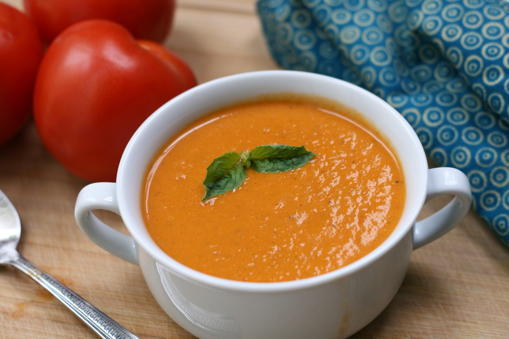

Cooking time
- Prep: 10 mins
- Cook: 30 mins
- Total: 40 mins
- Servings: 6
- Yield: 6 servings
Nutrition
- Calories: 142g
- Protein: 2.2g
- Carbohydrates: 10.5g
- Fat: 11g
- Cholesterol:33.4mg
- Sodium: 654.2mg
-
Full Nutrition
Ingredients
- 3 tablespoons butter
- 1 cup chopped onion
- ½ cup chopped carrots
- 2 stalks celery, chopped
- 2 cloves garlic, minced
- ¼ cup chopped fresh flat-leaf parsley
- 2 ½ cups chopped fresh tomatoes
- 1 (8 ounce) can tomato sauce
- ¾ cup strong brewed coffee
- ¼ cup water
- 1 teaspoon white sugar
- 1 teaspoon salt
- ground black pepper to taste
- ⅓ cup heavy cream